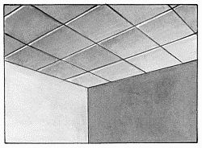
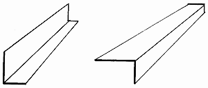
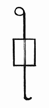
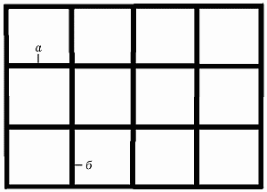
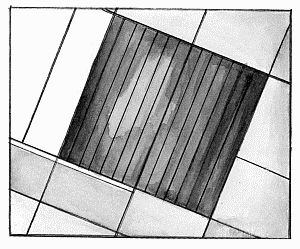

Потолки фирмы „Armstrong“.

Плиточные подвесные потолки фирмы „Armstrong“ (рис. 24) делятся на 4 группы, каждая из которых, в свою очередь, подразделяется на несколько видов:
– basis;
– prima;
– функциональные потолки;
– эксклюзивные.

Рис 24. Плиточный подвесной потолок фирмы „Armstrong“.
Basis – невлагостойкие потолки, рассчитанные на влажность воздуха до 70 %. Устанавливать такие плиты в ванной комнате и на кухне не рекомендуется: на них могут появиться вздутия. В группе basis представлено 3 вида потолков: „Baikal“, „Tatra“, „Cortega“.
Потолки группы prima рассчитаны на влажность воздуха до 95 %. Это достаточно влагостойкие потолки, которые вполне можно монтировать в помещениях повышенной влажности. Фирма-производитель предоставляет 10-летнюю гарантию на эту группу потолков.
Функциональные потолки представляют собой несколько видов потолочных плит, обладающих специфическими свойствами: акустические, гигиенические, влагостойкие, эксклюзивные.
Акустические плиты поглощают звук внутри помещения 2 способами:
– с помощью плит из мягкого стекловолокна, рыхлого по структуре;
– микроперфорацией – в плитах проделывают множество крошечных отверстий, которые „улавливают“ звук.
Гигиенические потолки используют в медицинских и детских учреждениях. Плиты покрыты специальной антимикробной виниловой пленкой, которую в случае необходимости моют струей высокого давления.
Влагостойкие потолки используют в помещениях со 100 %-ной влажностью, например в бассейнах, поскольку в процессе изготовления в плиты добавляют специальные кремнийсодержащие вещества.
Эксклюзивные потолки – покрытия самого высокого класса, с широчайшим разнообразием цветов, фактур и рельефов. В группе эксклюзивных потолков представлено более 15 видов с разнообразной фактурой. По желанию заказчика можно скомбинировать плиты различной фактуры, в результате получится потолочное покрытие со сложными, причудливыми узорами.
Однако эксклюзивные плиты стоят очень дорого, и позволить их себе могут далеко не все.
У фирмы „USG Donn“ нет четкого деления на группы, а имеются только отдельные модели. Именно поэтому, если решено приобрести продукцию этой компании, следует попросить продавца подробнее рассказать о ней.
Потолки фирм „Ecophon“ и „Akusto“ чаще всего называются акустическими подвесными потолками.
Однако несмотря на то, что плиты прекрасно поглощают звук внутри квартиры, можно услышать то, что делается в квартире наверху. К другим недостаткам относятся однообразие фактуры и впитываемость: в таком помещении нельзя курить, а также готовить, потому что спустя короткое время ваш потолок потемнеет.
К достоинствам акустического потолка относится влагостойкость – его можно монтировать даже в ванной комнате.
Потолки всех зарубежных фирм относятся к классу негорючих материалов. Следовательно, короткое замыкание для них совсем нестрашно.
Подвесные потолки позволяют:
– скрыть коммуникации, смонтированные на потолке, оставив при этом доступ к электрической проводке, вентиляционному и тепловому оборудованию и пр.;
– встраивать в них разнообразные осветительные приборы;
– устанавливать в них системы пожаротушения и вентиляционные решетки;
– выравнивать разноуровневый потолок;
– создавать разноуровневый потолок при изначально плоском базовом потолке;
– улучшать акустику помещений.
При современном строительстве широко используются потолки из минераловатных или минераловолокнистых плит.
Плиточные подвесные потолки состоят из каркаса и плит из мягкого или твердого минерального волокна, толщиной 1,5 см и размером 600 х 600 или 610 х 610 мм. В каталоге фирмы „Armstrong“ имеются также плиты размерами 600 х 1200 и
625 х 1250 мм. Однако в наличии они бывают не всегда, и чаще всего их приходится заказывать.
Каркас представляет собой набор металлических реек, соединенных между собой в модульную решетку.
Принцип устройства плиточного подвесного потолка типа „Armstrong“По периметру стены крепят уголок на шурупы или дюбеля в зависимости от поверхности стены: на гипсокартонных покрытиях используют шурупы по металлу, на бетонных – дюбеля диаметром 6 мм.
Стандартная длина уголка (рис. 25) составляет 3000 мм, ширина – 1,5 х 2 см.

Рис. 25. Уголок для подвесного потолка.
После этого на дюбеля крепят анкерные подвесы (рис. 26), причем расстояние между ними не должно превышать 1 м.

Рис. 26. Анкерный подвес для подвесного потолка.
На эти подвесы крепят направляющие: между ними должно быть расстояние 1200 мм. Между направляющими ставят соединительные элементы на расстоянии 60 см друг от друга (рис. 27).

Рис. 27. Установка каркаса плиточного подвесного потолка: а – направляющие; б – соединительные элементы.
В полученный таким образом каркас вставляют плиты.
При покупке подвесного потолка особое внимание следует обратить на стыковку плит с каркасом.
Дело в том, что продавцы довольно часто продают каркас одной фирмы-производителя, а плиты – другой. Смонтировать такой потолок очень трудно. Если вам и удастся это сделать, нет гарантии, что он прослужит долго: такой потолок очень быстро начнет деформироваться.
Следите за тем, чтобы форма кромок плит соответствовала типу каркаса.
Самостоятельно смонтировать подвесной потолок можно только в помещениях небольшой площади.
В другом случае, особенно если у вас мало опыта подобной работы, лучше всего воспользоваться услугами профессиональных монтажников.
Подвесные системы (каркас) делятся на 3 вида:
– видимый каркас;
– полускрытый каркас;
– скрытый каркас.
На территории Российской Федерации наибольшее распространение получили видимые и полускрытые каркасы, что обусловлено низкими ценами и простотой монтажа.
Сами подвесные потолки бывают:
– плоскостные;
– криволинейные.
Последние удобно монтировать при составлении разноуровневых потолков.
В зависимости от материалов, из которых изготовлены потолочные системы, подвесные потолки делятся на следующие виды:
– потолки из минераловатных плит;
– потолки из минероволокнистых плит;
– потолки из гипсовых плит;
– зеркальные потолки;
– металлические потолки;
– потолки с искусственным освещением.

Рис. 28. Зеркальный потолок.
Общая характеристика потолков из минераловолокнистых плитМинеральное волокно – экологически чистый материал, обеспечивающий отличную звукоизоляцию и тепло. Однако в помещениях с повышенной влажностью (например, кухне и ванной комнате) этот материал использовать не рекомендуется.
После покупки в том случае, если потолок монтируется не сразу, плиты следует хранить в помещении с температурой 18–30 °C при относительной влажности 70 %. Однако плиты некоторых фирм-производителей можно устанавливать в помещениях с температурой до 40 °C и влажностью до 95 %.
Плиты чаще всего имеют однородный белый цвет, но некоторые производители выпускают панели, окрашенные в различные цвета. Также плиты можно окрашивать латексными красками, однако огнестойкость данного материала понижается.
Потолки из минераловолокнистых плит имеют различную структуру поверхности: гладкая обладает хорошим светоотражением в помещениях с непрямым освещением, фактурная обеспечивает хорошую звукоизоляцию благодаря незаметным микроотверстиям.
Общая характеристика потолков из минераловатных плитМинераловатные плиты представляют собой панели с высокими шумопоглощающими свойствами. Чаще всего эти плиты называют акустическими.
Минераловатные плиты обладают хорошей водостойкостью: влага, попадая на них, почти моментально высыхает, не оставляя после себя никаких следов.
Минераловатные плиты отличаются следующими свойствами:
– снижают общий уровень шума: коэффициент звукопоглощения варьируется от 75 до 90 %;
– отвечают российским стандартам пожарной безопасности;
– могут использоваться в помещениях с повышенной влажностью воздуха (до 95 %).
Существует около 1000 различных оттенков минераловатных плит. При правильной эксплуатации можно надолго сохранить первоначальный цвет таких потолков.
Физические свойства материалов, составляющих подвесные потолкиК физическим свойствам материалов относятся:
– звукоизоляция;
– светотражение;
– теплопроводность;
– ударопрочность.
Звукоизоляция– способность поверхности препятствовать проникновению звуковых волн. Практически все виды потолочных плит обладают различными звукоизоляционными свойствами. Звукоизоляция измеряется в децибелах (дБ).
Светоотражение – способность отражения света поверхностью потолка. Светоотражение измеряется в процентном отношении. В том случае, если разница между светом с поверхности светильника и светом с поверхности потолка слишком велика, может появиться эффект ослепления.
Уровень освещения в помещении зависит от того, сколько света отражает поверхность потолка. При косвенном освещении требования к отражающей поверхности еще более возрастают.
Необходимо также, чтобы свет отражался и распространялся с высокой степенью рассеивания для устранения блеска и ослепляющего воздействия от освещенных поверхностей.
Теплопроводность. Теплопроводностью называется способность поверхности препятствовать проникновению и утечке тепла. Плиты почти всех фирм-производителей являются хорошим утеплителем.
Ударопрочность – способность поверхности противостоять механическим повреждениям.
Плиточные потолки из пенополистиролаСамым недорогим и практичным материалом для отделки потолка считается декоративная потолочная плитка из полистирола. С помощью обычных инструментов можно довольно быстро оклеить потолок.
При работе с полистирольными плитами необходимо знать некоторые правила. Первое – выбор плиток при покупке. Следует знать, что полистирольные плитки подразделяются на три основные группы:
– прессованные (штампованные) плитки;
– инжекционные плитки;
– экструдированные плитки.
Прессованная плитка производится из полос толщиной 6–7 мм, нарезанных из блоков пенополистирола строительного назначения.
Инжекционную плитку получают в пресс-формах формовочно-литьевого автомата путем спекания пенополистирольного сырья. Толщина готовых плит 9–14 мм.
Экструдированную плитку получают из экструдированной полистирольной полосы, окрашенной или покрытой пленкой способом прессования.
Второе правило – геометрически выверенные размеры плитки. Большие погрешности в плитке становятся заметными в отделке потолка.
Правильные размеры чаще всего имеет только инжекционная плитка благодаря технологии производства, в то время как прессованная и экструдированная плитка довольно часто характеризуется некоторыми неточностями в размерах.
Производители экструдированной и прессованной плитки продолжают совершенствовать геометрические размеры изделий и добиваются положительных результатов. Тем не менее при покупке обязательно следует проверять плитки.
Третье правило – просушивание пенополистирольных плиток до монтажа в сухом и теплом помещении в течение 3 дней в распакованном виде, иначе вследствие усадки на потолке между плитками могут появиться щели. В особенности это касается инжекционных плиток.
Четвертое правило – наклеивать плитки следует только на клей, который после сушки становится прозрачным, поскольку прозрачны и сами плитки.